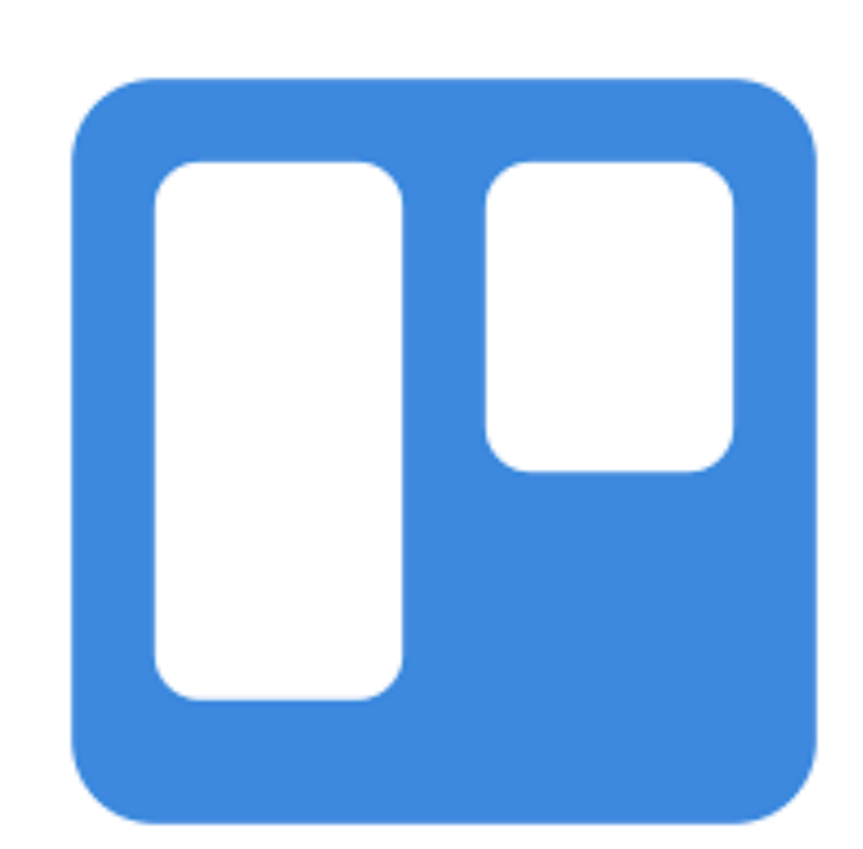
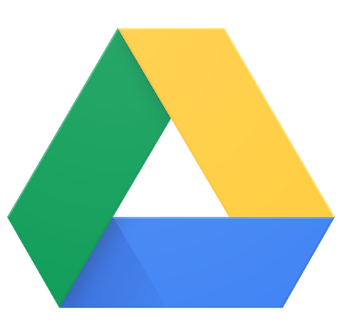
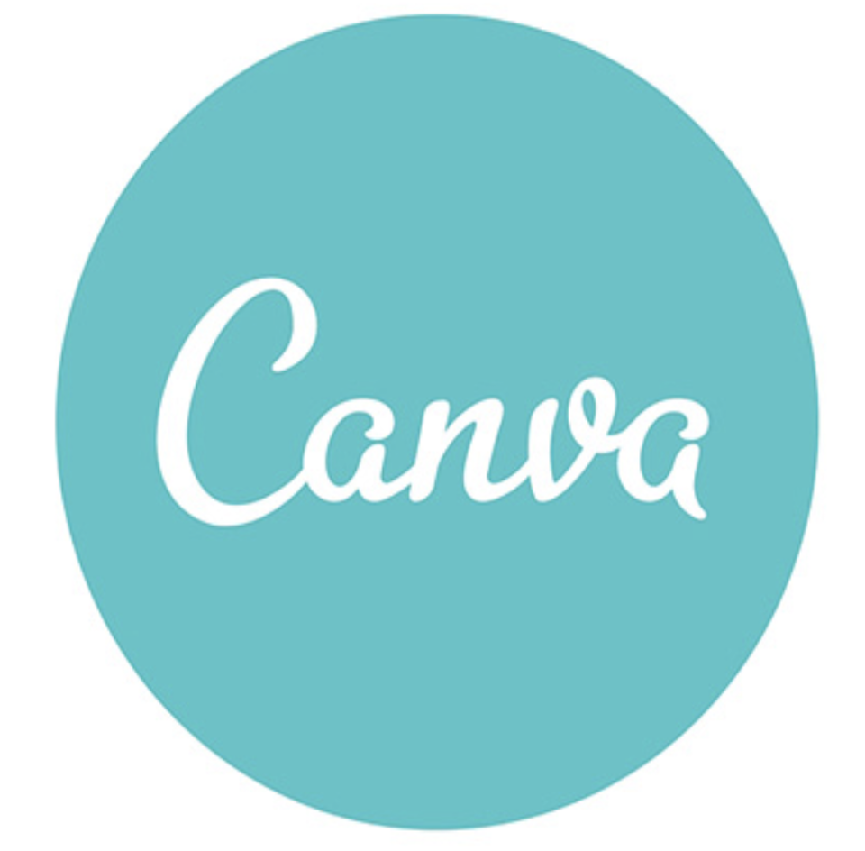
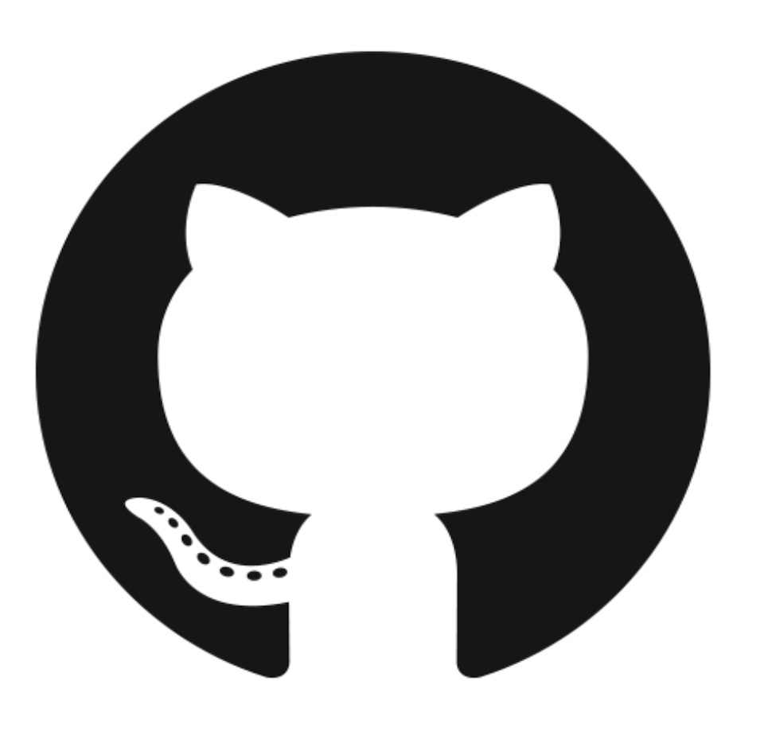
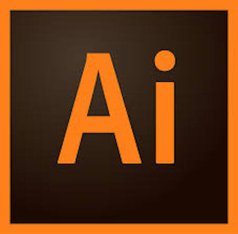

Ferramentas

Trello
O Trello é uma plataforma que tem como objetivo facilitar a organização de projetos. No nosso projetos, estamos utilizando ele para a organização geral da equipe, para estipular prazos, registros de reuniões, etc.

Google Drive
O Google Drive é um serviço permite o armazenamento de arquivos na nuvem do Google, dessa forma ele foi utilizado para o armazenamento de dados em nuvem, para evitar perda de arquivos e sempre ter um backup e também para manter um ritmo maior no trabalho da equipe. Já que essa ferramenta permite que arquivos sejam manipulados por mais de um usuário ao mesmo tempo.

Canva
O Canva é um serviço online que tem como objetivo ser uma ferramenta descomplicada para criação de peças de design e edição de imagem. Na fase inicial do projeto foi a ferramenta que utilizamos para montar as apresentações.

Github
GitHub é um sistema de gerenciamento de projetos e versões de códigos assim como uma plataforma de rede social criado para desenvolvedores. No nosso projeto, estamos utilizando ele para o controle de versões do nosso software e tornar a produção do código mais dinâmica.
Whatsapp
O Whatsapp é um software para smartphones utilizado para troca de mensagens de texto instantaneamente, além de vídeos, fotos e áudios através de uma conexão a internet. Durante o nosso projeto, temos utilizado como forma de comunicação geral do grupo e comunicação com o nosso cliente e mediador.

Adobe Illustrator
O Adobe Illustrator é um editor de imagens vetoriais, é utilizado no projeto para produção de elementos gráficos usados no dossiê, nas apresentações e outros documentos elaborados pela equipe.
Sublime Text
O Sublime Text é um editor de texto e código-fonte multiplataforma, escolhemos a sua utilização no projeto principalmente por ele ser multiplataforma. A sua utilização no projeto é exclusivamente para a edição do código.
Discord
O Discord é um aplicativo de voz sobre IP proprietário e gratuito, projetado para comunidades de jogos. Por sua boa perfomace, foi escolhido para utilização quando fazemos reuniões de longa distância.